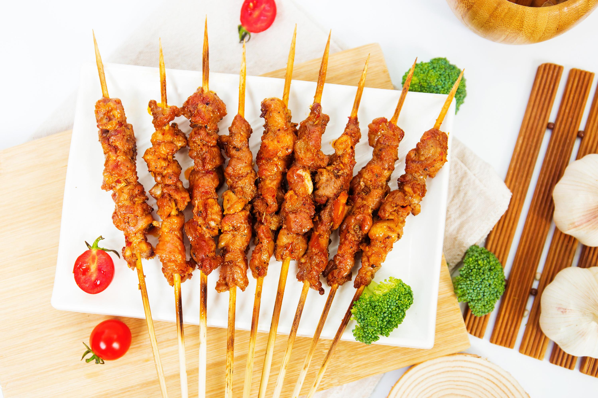
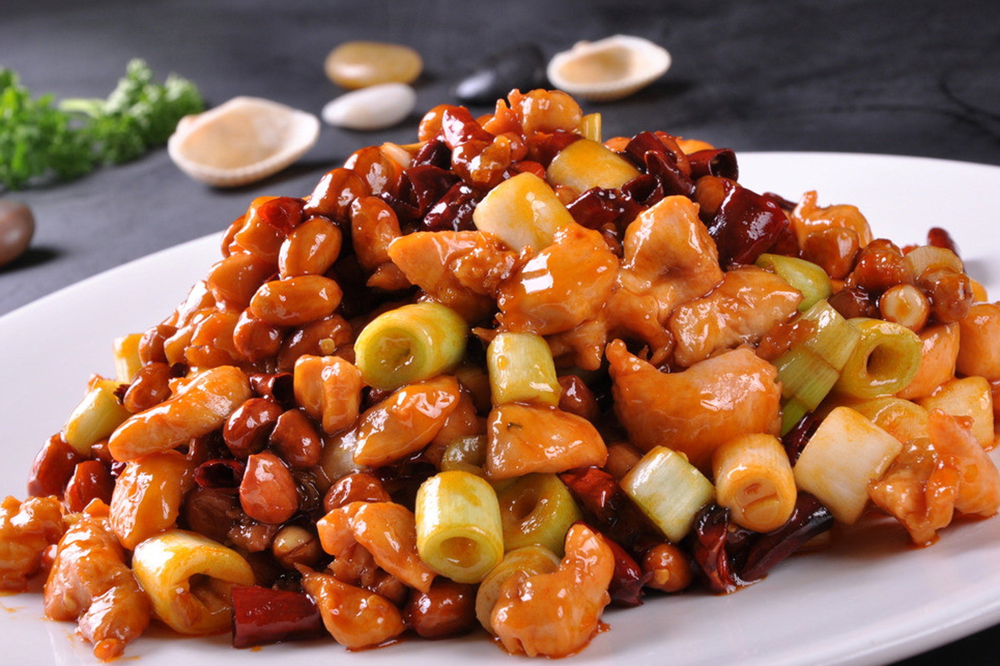

香辣羊肉串
让人无法拒绝的中国北方美食
- 烤羊肉串是新疆人喜爱的风味小吃，肉质鲜嫩，味咸辣，广受人们欢迎。 烤羊肉要有专门设备，家庭中没有这种设备时，可油炸羊肉串，味道和烤的羊肉串一样。方法是将净羊肉500克切成薄片待用，另取洋葱25克、精盐、辣椒粉、孜然粉各少许（如无孜然粉可用白醋10克、胡椒粉少许代替），将洋葱切碎和以上调料拌匀，将切好的羊肉片腌1小时，使之入味，再用细竹签将肉片串串。 将花生油烧至八成熟时，把羊肉串放入锅中，及时转动，炸至金黄色即可食用。 如无羊肉，也可用猪五花肉代替，味道也很鲜美。
水煮肉片
以猪里脊肉为主料的一道地方新创名菜，起源于自贡，发扬于西南，属于川菜中著名的家常菜。
- 因肉片未经划油，以水煮熟故名水煮肉片。 水煮肉片肉味香辣，软嫩，易嚼。 吃时肉嫩菜鲜 ，汤红油亮，麻辣味浓，最宜下饭，为家常美食之一；特色是“麻、辣、鲜、香”。

小炒肉
湖南省一道常见的特色传统名菜，属于湘菜系。麻辣鲜香，口味滑嫩。制作原料主要是五花肉和青椒、红椒等。
- 湖南农家小炒肉一般选用肉质比较细嫩的猪肉，最好是“隔纱”五花肉，用青椒、豆豉爆炒，中间加入香喷喷的油渣。辣椒最好选用形状瘦的、比较辣的青椒；嗜辣者亦可依个人喜好加入干尖椒或者剁辣椒的。好吃的小炒肉细嫩、有着青椒、瘦肉和豆豉的油香但是绝不腻人。做好这个菜，食材第一，火候第二，突出到酸辣、香鲜、软嫩的品味，是最能见湘菜水平的家常菜。
宫保鸡丁
2018年9月，被评为“中国菜”之贵州十大经典名菜、四川十大经典名菜。
- 宫保鸡丁，是一道闻名中外的特色传统名菜，在鲁菜、川菜、贵州菜中都有收录，其原料、做法有差别。该菜式的起源与鲁菜中的酱爆鸡丁、贵州菜中的胡辣子鸡丁有关，后被清朝山东巡抚、四川总督丁宝桢改良发扬，形成了一道新菜式——宫保鸡丁，并流传，此道菜也被归纳为北京宫廷菜 。之后宫保鸡丁也流传到国外。
